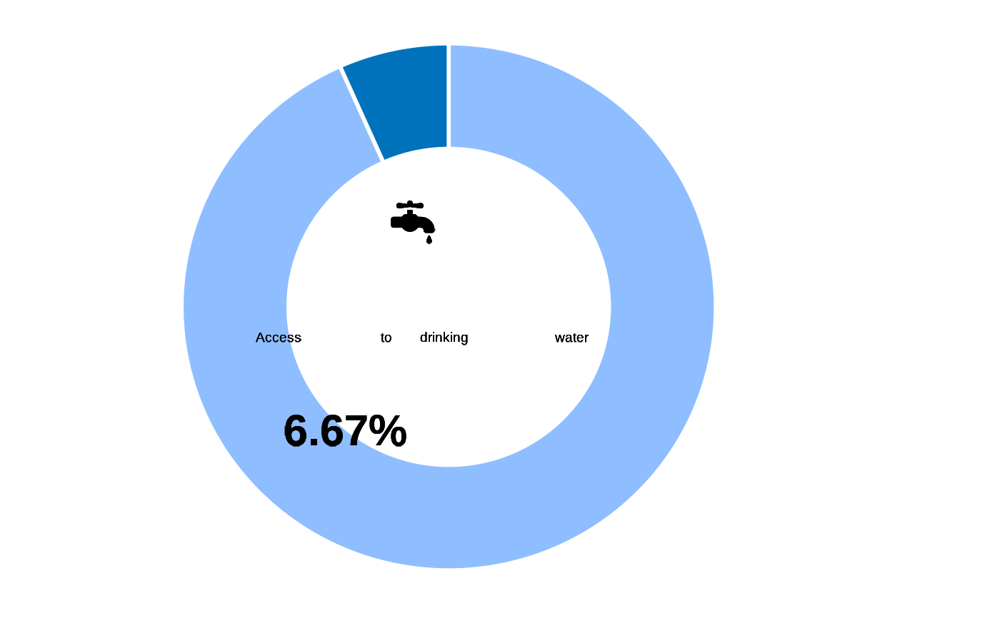

Access to clean drinking water is essential for a person's survival and well being and a precursor for achieving protection outcomes related to health, education and economic developed. The calculation for access drinking water is linked to SGD Indicator 6.1.1. The questionnaire module and the analysis guidance is taken from UNICEF MICS6.
Numerator: Population using improved sources of drinking water either in their dwelling/yard/plot or within 30 minutes round trip collection time
Denominator: Total population
Formula: DWA03 < 30 (under 30 minutes), & DWA01 != 7,9,13,96,98 & DWA02 != 3
This basic service is calculated from the main dataset There are three conditions as below improved source, in dwelling/yard/plot and reachable under 30 minutes
Usage
inter_drinkingwater(
datalist,
mapper = list(hierarchy = "main", variablemap = data.frame(label =
c("What is the main source of drinking water for this household?",
"Where is this source located?", "Unit used to measure time to access",
"How long does it take to go there, get water, and come back,\n including waiting time?"),
variable = c("DWA01", "DWA02", "DWA03a", "DWA03b"), mappattern = c("DWA01", "DWA02",
"DWA03a", "DWA03b")), modalitymap = data.frame(variable = c("DWA01", "DWA01",
"DWA01", "DWA01", "DWA01", "DWA02",
"DWA02", "DWA02", "DWA03a", "DWA03a"),
label = c("Unprotected Dug Well", "Unprotected Spring",
"Surface Water (River, Stream, Pond, Dam, Canal)", "Other, specify", "Don't know",
"In Own Dwelling", "In Own Yard/Plot", "Elsewhere", "Minutes", "Hours"), standard =
c("7", "9", "13", "96", "98", "1", "2", "3", "1", "2"), map = c("7", "9", "13", "96",
"98", "1", "2", "3", "1", "2")))
)Arguments
- datalist
A list with all hierarchical data frame for a survey data set. format is expected to match the Excel export synchronized from kobo to RILD and loaded with kobocruncher::kobo_data()
- mapper
a list providing the mapping of the variables used for the calculation - this mapper is potentially to be adjusted in relation with deviation between the the standard XlsForm and the contextualized dataset
Examples
datalist <- kobocruncher::kobo_data( system.file("test.xlsx",
package = "IndicatorCalc"))
#> Warning: Expecting logical in G1286 / R1286C7: got 'no'
## in the contextualised form - DWA03a has been skipped and all results are in min...
## only manual transformation can adjust this before we use the mapper..
datalist[["main"]]$DWA03a <- "1"
datalist[["main"]]$DWA03b <-
datalist[["main"]]$VulnerabilityScoring.BasicNeeds.DWA03
# now the mapper
mapper <- list(
hierarchy = "main",
variablemap = data.frame(
label = c(
"What is the main source of drinking water for this household?",
"Where is this source located?",
"Unit used to measure time to access",
"How long does it take to go there, wait get water, and come back?"),
variable = c("DWA01",
"DWA02",
"DWA03a",
"DWA03b" ),
mappattern = c("DWA01",
"DWA02",
"DWA03a",
"DWA03b" ) ),
modalitymap = data.frame(
variable = c("DWA01", "DWA01", "DWA01","DWA01", "DWA01",
"DWA02","DWA02", "DWA02",
"DWA03a","DWA03a"),
label = c(
##DWA01
"Unprotected Dug Well",
"Unprotected Spring",
"Surface Water (River, Stream, Pond, Dam, Canal)",
"Other, specify",
"Don't know",
##DWA02
"In Own Dwelling",
"In Own Yard/Plot",
"Elsewhere",
## DWA03a
"Minutes",
"Hours" ),
standard = c( "7", "9", "13", "96", "98",
"1", "2", "3",
"1", "2"),
map = c( "7", "9", "13", "96", "98",
"1", "2", "3",
"1", "2") )
)
datalist <- inter_drinkingwater(datalist, mapper )
#> ℹ DWA01 standard variable was not found in the dataset.
#> ℹ DWA02 standard variable was not found in the dataset.
#> DWA03a is in the dataset and has at least one of the expected modality for calculation
#> ℹ DWA03b standard variable in the dataset misses at least one response among :
#> ℹ DWA01 variable has more than one variable pattern match in the dataset. We will take the first one but good to check...
#> The following `from` values were not present in `x`: 9
#> Mapped levels for DWA01 are now: 1, 11, 12, 13, 14, 15, 2, 3, 4, 5, 7, 96, 98
#> ℹ DWA02 variable has more than one variable pattern match in the dataset. We will take the first one but good to check...
#> Mapped levels for DWA02 are now: 1, 2, 3
#> The following `from` values were not present in `x`: 2
#> Mapped levels for DWA03a are now: 1
#> Mapped levels for DWA03b are now: 0, 10, 15, 2, 3, 30, 5, 90
## Indicator summary
table(datalist[["main"]]$drinkingwater, useNA = "ifany")
#>
#> 0 1
#> 1204 86
fct_plot_indic_donut(indicator = datalist[["main"]]$drinkingwater,
iconunicode = "e006")

## Check auxilliary
table(datalist[["main"]]$dwa_cond1, useNA = "ifany")
#>
#> 0 1
#> 69 1221
table(datalist[["main"]]$reachableU30, useNA = "ifany")
#>
#> 0 1
#> 1 1289
table(datalist[["main"]]$DWA02, useNA = "ifany")
#>
#> 1 2 3 <NA>
#> 42 34 11 1203
table(datalist[["main"]]$dwa_cond2, useNA = "ifany")
#>
#> 0 1 <NA>
#> 1 86 1203